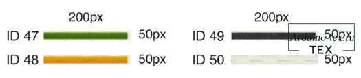

Конструктор проектов на ESP32, Arduino
и дисплее DWIN - DWIN Box.
Дисплеи компании DWIN достаточно недорогие и функциональные, что делает их интересным решением при реализации своих проектов и DIY. Но, несмотря на плюсы, есть и минусы — это среда разработки DGUS, которая на английском языке, и при разработке интерфейса требуется подготовить графические элементы. Эти небольшие особенности приводят к сложностям быстрой реализации проекта на дисплее от компании DWIN Technology. Исходя из этого, было принято решение сделать простой конструктор, который позволит без программирования и отрисовки кнопок, слайдеров, плашек под текст создать проект с использованием дисплея DWIN. Конструктор DWIN Box был интегрирован с блочным программированием. Ниже вы можете посмотреть презентацию от разработчика ArduBlock.
Онлайн редактор интерфейса DWIN Box.
Онлайн редактор DWIN Box можно протестировать тут.
Для создания интерфейса необходимо:
Так просто делается визуальный интерфейс для дисплея DWIN.
Как будет выглядеть кнопка или другой графический элемент на дисплее?
Для удобства все элементы подписаны, и изменить вы их можете не только в визуальном редакторе, но и при создании программы блоками в ArduBlock или ESP Block.
На экране можно отобразить текст и графические элементы:

Кроме этого, можно добавить в проект:
1. изменения яркости подсветки дисплея DWIN;
2. звуковое уведомление с временем звучания от 0 до 255 мс.

Это доступные элементы в текущей версии. В новой версии будет больше графических элементов и инструментов взаимодействия с дисплеем DWIN.
Создание проекта блочным программированием - ESP Block 2.0.
Петров Виталий Николаевич создал блоки для данного конструктора и интегрировал в свой проект ESP Block 2.0 и ArduBlock 2.0. Что позволяет создать не только интерфейс для дисплея DWIN, но и подключить датчики и исполнительные механизмы к микроконтроллеру.
Нами была написана книга «DWIN Box Быстрый старт в тач мир», в которой содержится 20 примеров использования конструктора.
Как изменить оформление интерфейса DWIN Box?
Нами было разработано 7 наборов скинов для DWIN Box.Посмотреть скины можно вот в этом разделе сайта.
Каждый набор также имеет описание и нумерацию элементов. Что, в свою очередь, даёт понимание, как будет выглядеть интерфейс при смене скина. Чтобы поменять скин, достаточно приобрести один из доступных скинов, загрузить на дисплей, и оформление поменяется.
Также вы можете заказать скин для вашего проекта. Для этого пишите мне в личку в ВК.
Где можно найти примеры работы с DWIN Box?
С примерами использования конструктора вы можете ознакомиться в книге «DWIN Box Быстрый старт в тач мир». В книге приведено 20 примеров создания интерфейса и управления периферийными устройствами с дисплея. От простого мигания светодиодами до создания клавиатуры и управления шаговым двигателем.
С книгой идут все необходимые исходные материалы.
Также Петров Виталий Николаевич снимает видео ролики по данной теме и выкладывает на свой канал.
На нашем сайте и канале также будут материалы по контракту с DWIN Box.
Какие дисплеи поддерживает конструктор интерфейсов DWIN Box?
DWIN Box поддерживает практически все дисплеи компании DWIN серии COB – это дисплеи на плате. Выглядят вот так.
Также поддерживаются все дисплеи серии COF, кроме одного - DMG10600F070-01W**.
Список всех моделей разместить в статье нет возможности, поэтому список дисплеев совместимых с нашим конструктором интерфейсов можно скачать внизу статьи в разделе «файлы для скачивания».
Если дисплей присутствует в списке, то его можно покупать для создания проекта с использованием DWIN Box. У модели дисплея могут отличаться только последние 1-2 буквы:
Последние буквы в маркировке означают тип сенсора:
Подробнее о типе сенсора можете почитать вот в этой статье.
И полезная информация для тех, кто дочитал до конца статьи. У вас есть уникальная возможность заказать тестовый образец дисплея компании DWIN Technology. Подробнее тут.
Приобрести дисплей DWIN можно в официальном магазине DWIN Technology на AliExpress. Воспользуйтесь промокодом ARDUINOTEX или ARDUINOTEX1 и получите хорошую скидку. А также гарантированную техническую поддержку.
Менеджер DWIN в России Сергей
Tелеграмм: https://t.me/Segey_DWIN (@Segey_DWIN)
WhatsApp: +7 995 278 76 20
Понравилась статья Конструктор проектов на ESP32, Arduino и дисплее DWIN - DWIN Box? Не забудь поделиться с друзьями в соц. сетях.
А также подписаться на наш канал на YouTube, вступить в группу Вконтакте.
Спасибо за внимание!
Технологии начинаются с простого!
Скачивая материал, я соглашаюсь с Правилами скачивания и использования материалов.
|
Список дисплеев совместимых с конструктором DWIN Box.xlsx |
28 Kb |
212 |